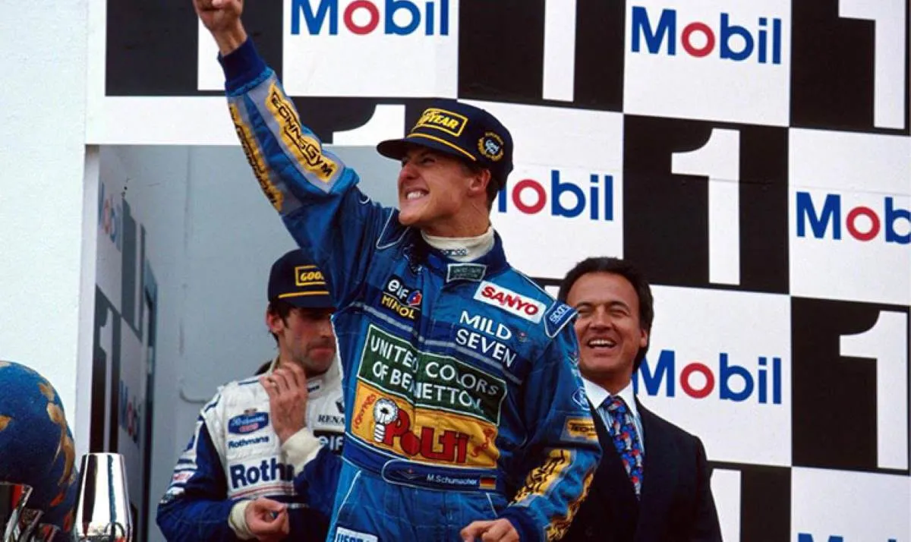
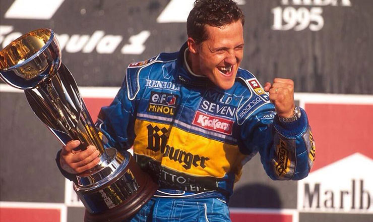
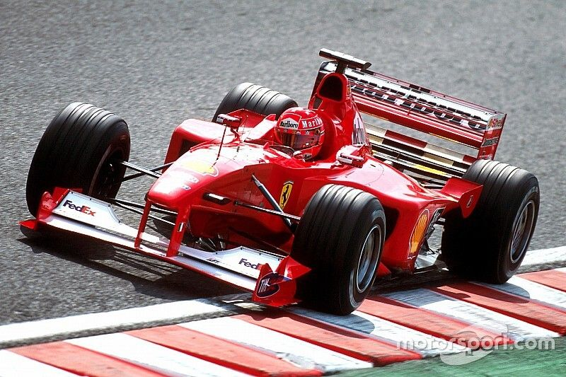
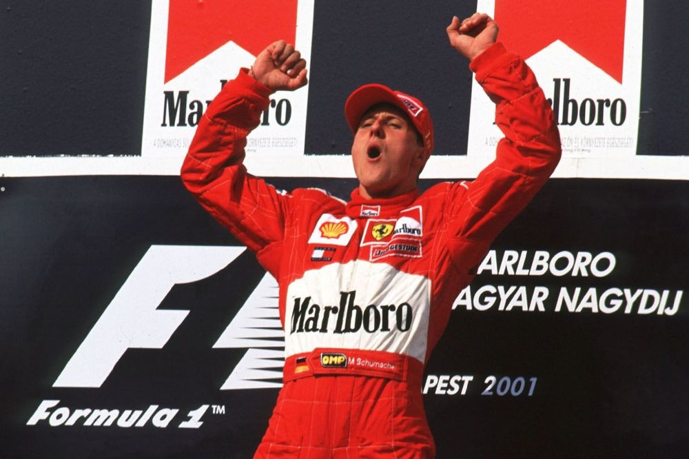
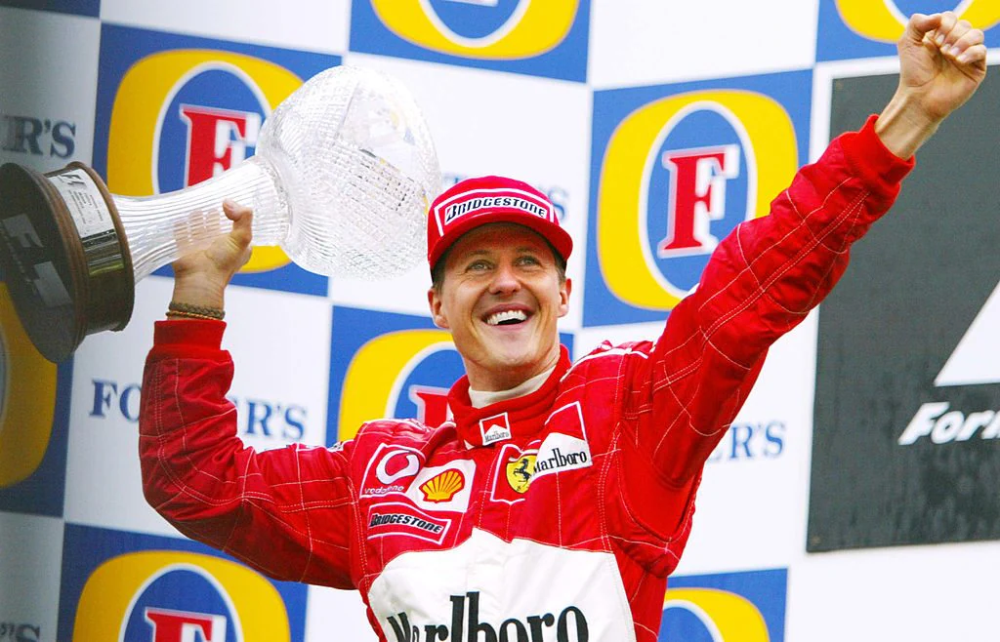
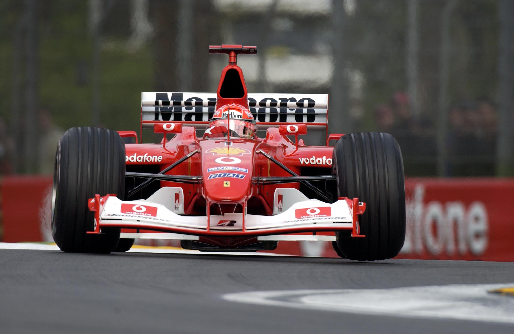
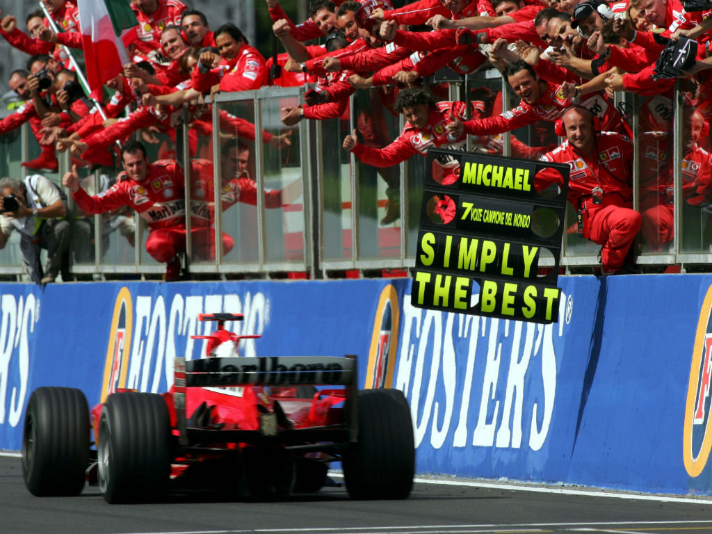
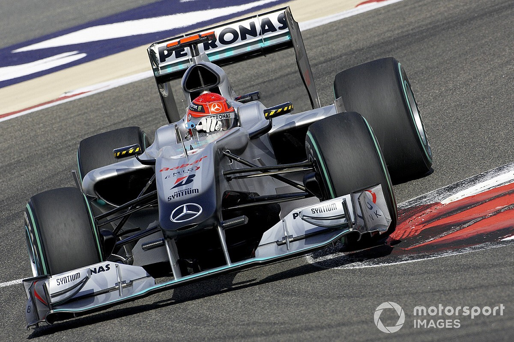

.png)
Michael Schumacher – Il Kaiser
Michael Schumacher è universalmente riconosciuto come uno dei più grandi piloti nella storia della Formula 1. Con 7 titoli mondiali, 91 vittorie e una carriera straordinaria, ha ridefinito il concetto di successo nella massima categoria del motorsport. Dal debutto con Jordan alla consacrazione con Benetton e il dominio assoluto in Ferrari, Schumacher è stato il volto della F1 per oltre un decennio.
1994 – Il Primo Titolo con Benetton
Michael Schumacher al volante della Benetton-Ford nel 1994.
Nel 1994 Schumacher vinse il suo primo titolo mondiale, battendo Damon Hill in una stagione controversa. Dopo la tragica morte di Ayrton Senna a Imola, Schumacher si impose come leader, vincendo sei delle prime sette gare. Tuttavia, fu squalificato in alcune occasioni e la stagione si chiuse con il famigerato contatto ad Adelaide, dove un incidente con Hill gli garantì il titolo tra le polemiche.
1995 – Dominio con la Benetton-Renault
Schumacher celebra il suo secondo titolo mondiale.
Con la nuova motorizzazione Renault, Schumacher fu inarrestabile nel 1995. Con 9 vittorie e una guida magistrale in condizioni difficili, dominò il campionato contro avversari come Hill e Coulthard. La stagione fu il trampolino di lancio per il passaggio alla Ferrari, una sfida epica che avrebbe definito il resto della sua carriera.
2000 – La Rinascita della Ferrari
Il titolo del 2000 fu il primo con la Ferrari dopo 21 anni.
Dopo anni di lavoro e sacrifici, nel 2000 Schumacher riportò la Ferrari alla gloria. Fu una stagione intensa, con battaglie epiche contro Hakkinen. La vittoria a Suzuka fu il momento decisivo: Schumacher diventò campione del mondo con la Ferrari, interrompendo un digiuno di titoli che durava dal 1979 per la scuderia.
2001 – Il Campione Incontrastato
Schumacher in azione nel 2001 con la Ferrari F2001.
Il 2001 consolidò il dominio Ferrari. Schumacher vinse 9 gare e divenne il pilota con il maggior numero di vittorie nella storia. Il team, ormai perfettamente coordinato, dominava le strategie e la gestione delle gare, lasciando poco spazio agli avversari.
2002 – Una Stagione Perfetta
2002: 11 vittorie e podio in tutte le gare disputate.
Il 2002 fu forse la stagione più dominante nella storia della F1. Schumacher fu sul podio in ogni gara, vincendo 11 volte e chiudendo il campionato con oltre 140 punti. Il suo stile di guida fluido e strategico lo rese inarrivabile per tutti gli altri piloti.
2003 – Il Sesto Titolo
Schumacher supera Fangio per titoli mondiali vinti.
Il 2003 fu più difficile. Williams e McLaren si avvicinarono, ma Schumacher resistette. La vittoria al Gran Premio degli Stati Uniti fu cruciale. Alla fine, conquistò il sesto titolo superando il record di Juan Manuel Fangio, un traguardo storico nella Formula 1.
2004 – Il Settimo Sigillo
2004: l’apice della carriera di Schumacher.
Nel 2004, Schumacher vinse 13 delle 18 gare, un record imbattuto fino a quasi vent’anni dopo. Il suo settimo titolo fu l'apice di una carriera brillante, ottenuto con una Ferrari imbattibile e una macchina quasi perfetta. Fu l’ultima stagione veramente dominante del tedesco.
La Fine della Carriera e la Tragedia Personale
Schumacher tornò in pista con Mercedes tra il 2010 e il 2012.
Dopo il ritiro nel 2006, Schumacher tornò sorprendentemente in pista nel 2010 con la Mercedes, aiutando il team a crescere e diventare ciò che oggi conosciamo come il colosso della F1. Nonostante i risultati non fossero più da campione del mondo, il suo contributo fu fondamentale per il futuro del team.
Nel 2013, mentre sciava con suo figlio Mick, Michael ebbe un gravissimo incidente in montagna. Rimase in coma per mesi e da allora vive lontano dalle scene pubbliche. La sua famiglia mantiene un forte riserbo sulle sue condizioni, e i tifosi continuano a sostenerlo con grande affetto e rispetto.
Caschi Iconici di Michael Schumacher
1994 – Casco blu Benetton con sponsor Mild Seven: primi due titoli mondiali
2004 – Il celebre casco rosso Ferrari, simbolo del suo dominio nei primi anni 2000
2011 – Casco rosso cromato con stella Mercedes, per il ritorno in F1